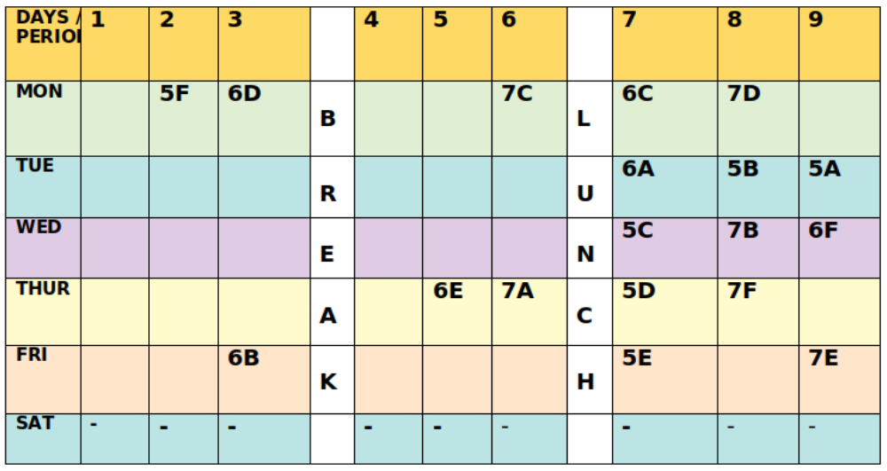
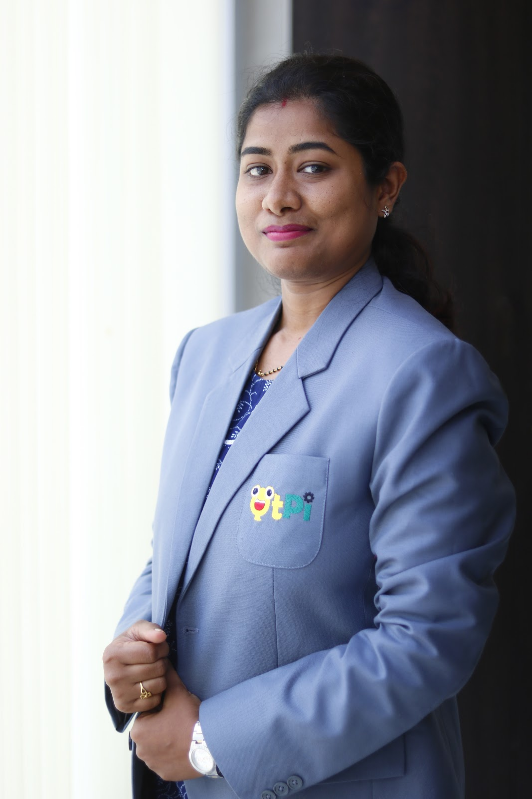
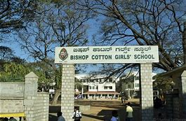

About us
Founded in 1865, it is one of the oldest established boarding schools in Asia.
The school was named after Bishop George Edward Lynch Cotton, the son of an Army captain, who died leading his regiment in battle. He was a scholar of Westminster School, and a graduate of Cambridge. In 1836 he was appointed Assistant Master at Rugby by Doctor Thomas Arnold, one of the founders of the British public school system.
It was the proposal of Bishop Cotton to create schools in India that resulted in the founding of Bishop Cotton on 19 April 1865. The institution was opened for both boys and girls in a bungalow named Westward Ho in High Grounds. In 1871, the management acquired 14 acres of land on St. Mark's Road and shifted the school, demarcating two areas, one for the boys school and the other for the girls, with a wall separating the two.
- Vision: "To ensure that all students achieve intellectual & personal excellence through holistic educational approaches and envision themselves as global leaders"
- Mission: "BCGS will be a dynamic & motivating educational environment that moulds self-reliant learners of all ages and prepares students to lead the global market with confidence"
To impart a holistic education that:
- Nurtures the best in every individual
- Creates confident young women who can claim their place in industry, society and the body politic
- Balance academics with extra-curricular activities and sports
- Inculcates moral values, attitudes and habits that celebrate human dignity and equal opportunity
- Nurtures leadership, compassion and a sense of justice
- All for the greater glory of God and His creation
- Moto: "Neither to the right nor to the left", the motto reflects the spirit of the school. It is taken from a Latin translation of a phrase in the Old Testament of the Bible. The new leader Joshua is commissioned by God to be a true follower of His law, 'neither to the left nor to the right'.
To Know about [QtPi Robotics] (https://www.qtpi.in/)
- CHROME is a unique and one of the first Comprehensive Robotics League and Maker's Expo conducted at school level. Around 90 teams from 20 Schools and Robotics. Ourgirls made us proud by winning a few criteria in this competition.
- Our Team named as Code Vaulters won RoboCup Junior (RCJ) at national level which was held in Bangalore in 2018, qualifying to take part in International Competition RCAP.Team Codevaulters, namely, Saanvi L Dharman, Sriya Sunku, Nandana and Devaki Prasad bagged second place in the Junior category of the OnStage Performance League in TDA.
- In January 2020, Team Agribotix and Team Bot after Bot participated in Robofest organised by Novatech.
- Also in the same month Team Agribotix exhibited their bots and new methodology of Farming in a prestigious event organised by Deshapande's foundation. Students were honoured by meeting all big techies and benefitted by taking part in various technologies related seminars.
- Code vaulters

- Robofest

Individual achievements.
Mayo Srinidhi from Grade 6C, has come up with Minifan using an old RC car motor, wheel and a regulator.

Sandhiya from 5A has done a Brooming robot using motors, plates, plastic cups and brush

- Around 90 teams from 20 Schools and Robotics in CHROME 2019
- Academies from Bangalore and Chennai participated in CHRoME:2019.
- TEAM LUCAS- FABIOLA KATHERINE E, JESSLIN HEPHZIBAH, DEBANANNDITA RAY grade 5 won (II nd Prize in BIONICS)
- TEAM WINGS OF FIRE- SYEDA SANA AIZA, SHERIN W and NAMRATHA H of grade 5 won ( III rd Prize in BIONICS)
- Team TEHCHNEMESIS- SHOKA REDDY, GARIMA BHADRA and MYRA RIZVI of grade 8 won in ( ROBO WARZ).
|
|
|
|


- TECHNEMESIS

Star Students for the Academic year 2019-2020
Star Teams for the Academic Year 2019-2020
QtPi robotics Team has endeavoured tremendous effort On Robocup Junior 2019 in Moscow.
In the month of January grade 7 girls participated in ROBOFEST conducted by NOVOTECH.
Name | Picture | Qualification |
SHASHWATI TOSH |  | B.TECH (CSE) |
MEGHANA P |
| B.E, M.Tech |
VIDHYA N | B.E |



Bishop Cotton Girls' School
St. Mark's Road, Residency Road,
Shanthala Nagar, Ashok Nagar, Bengaluru,
Karnataka 560025
Fax: 91 80 2224 3690
Telephone: 91 80 2221 0268 / 2221 3083
Email: bcgs@bishopcottongirls.com
Website : www.bishopcottongirls.com
|